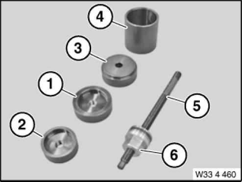

33 4 460 Tool
33 4 460 Tool
0494929
Minimum set: Mechanical tools
MW

NOTE: For removing and installing camber arm rubber mount on rear axle support.
Storage Location: B49
C49
SI number: 01 15 04 (117)
Consisting of:
1 = 0494977 Washer
NOTE: (Inserting washer) discontinued, can only be ordered using complete tool
2 = 0494978 Washer
NOTE: (pull-out disc)
3 = 0494979 Holder
NOTE: (Counter support) discontinued, can only be ordered using complete tool
4 = 0494980 Holding sleeve
NOTE: (support sleeve)
5 = 0494981 Spindle
NOTE: (spindle 205 mm, M12)
6 = 0494982 nut
NOTE: (Thrust nut)